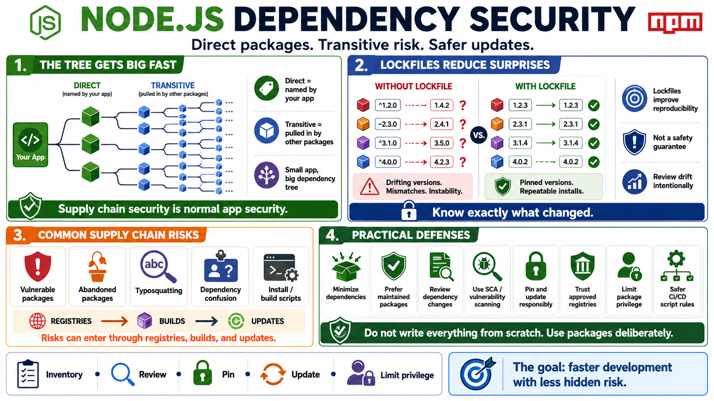

Dependencies and npm Supply Chain Risk
Connecting to LMS... Progress: in progress

Narration
Most Node.js applications rely on npm packages, and many of those packages rely on other packages. A direct dependency is one your application names. A transitive dependency is pulled in by another dependency. The full dependency tree can become much larger than the code a team intentionally wrote, which means supply chain security has to be part of normal application security.
Lockfiles help make dependency versions more reproducible across installs and environments. They are not a guarantee of safety, but they reduce ambiguity about what code should be installed. When lockfiles are ignored, regenerated casually, or allowed to drift without review, teams can lose visibility into what changed. Dependency updates should be intentional enough to support both security fixes and operational stability.
Supply chain risks include vulnerable packages, abandoned packages, typosquatting, dependency confusion, and package scripts that execute during installation or build. These topics do not require fear, but they do require governance. Teams should know which package registries are trusted, how new dependencies are approved, what scripts are allowed in CI/CD, and how vulnerability alerts are triaged.
The answer is not to write everything from scratch. That usually creates more risk and maintenance burden. The practical answer is to minimize unnecessary dependencies, prefer well-maintained packages, use software composition analysis, review dependency changes, pin and update responsibly, and design the application so a compromised or flawed package has less privilege and less access than it would by default.